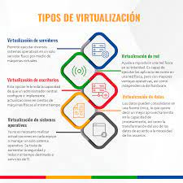
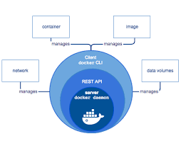
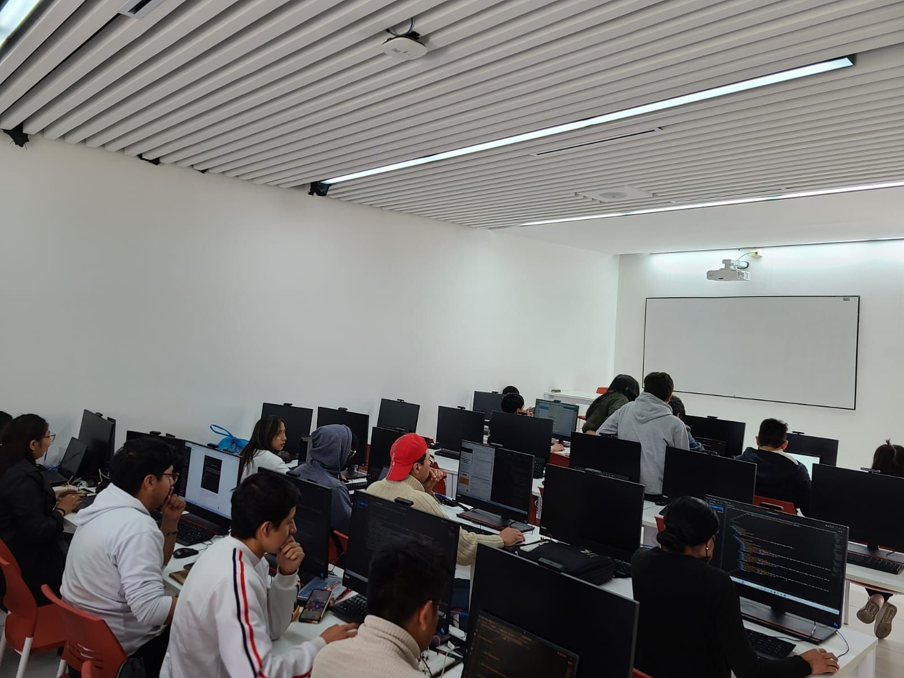

La virtualización es una tecnología que permite crear versiones virtuales de recursos, como hardware, sistemas operativos, almacenamiento, etc. Esto facilita la utilización eficiente de los recursos y la administración de entornos complejos.
Existen varios tipos de virtualización, incluyendo virtualización de hardware, virtualización de software y virtualización de red. Cada tipo tiene su propio propósito y beneficios.
Docker es una plataforma de contenedorización que permite empaquetar aplicaciones y sus dependencias en contenedores. Un contenedor es una unidad ligera y portátil que puede ejecutarse en cualquier entorno que admita Docker.
Aquí tienes una foto con todos los compañeros del curso en la fecha mencionada.
